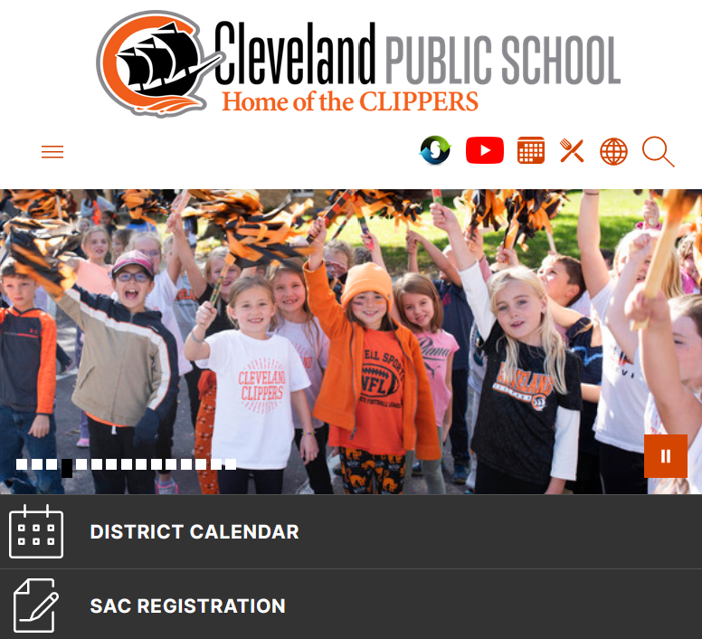

Billy Wencl
Experience

Tech Department Programmer
This position involved frontend development, automation with rest APIs, Google Apps Script, and project management.
Read More ->
Education
Projects

Cleveland Public School Website
This is my longest-running project, beginning in the fall of 2020. I have made all the customizations and many design choices that got the site to its current point.
See More ->